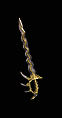

|

裂脊者
銳匕
Spineripper
Poignard
|
單手傷害:
(33-35) - (81-88)
(變動) (平均傷害59)
等級需求: 32
力量需求: 25
耐久度: 16
武器基本速度: [-20]
+200-240% 增強傷害
(變動)
增加 15-27 傷害
15%增加攻擊速度
+1 死靈法師技能等級
防止怪物 治療
忽視目標防禦
8% 偷取生命
+10 敏捷
|
|

刻心者
詩歌匕首
Heart Carver
Rondel
|
單手傷害:
(44-49) - (110-123)
(變動) (平均傷害81)
等級需求: 36
力量需求: 25
敏捷需求: 58
耐久度: 20
武器基本速度: [0]
+190-240% 增強傷害
(變動)
增加 15-35 傷害
35% 致命攻擊
忽視目標防禦
+4 殘酷嚇阻 (限野蠻人)
+4 尋找物品 (限野蠻人)
+4 尋找藥劑 (限野蠻人)
|
|

黑沼之鋒
強波刀
Blackbog's Sharp
Cinquedeas
|
單手傷害:
30 - 76 (平均傷害53)
等級需求 38
力量需求: 25
敏捷需求: 88
耐久度: 24
武器基本速度: [-20]
+488 毒素傷害,持續10 秒
增加 15-45 傷害
30%增加攻擊速度
減慢目標速度 50%
+50 防禦
+4 劇毒新星 (限死靈法師)
+4 毒爆 (限死靈法師)
+5 淬毒匕首
(限死靈法師)
|
|

暴風尖刺
小劍
Stormspike
Stiletto
|
單手傷害:
47 - 90 (平均傷害68)
等級需求 41
力量需求: 47
敏捷需求: 97
耐久度: 24
武器基本速度: [-10]
+150% 增強傷害
增加 1-120 閃電傷害
受攻擊時25%機率發動等級3 充能彈
閃電抵抗 +1-99 % (依角色等級乘1)
攻擊者受到閃電傷害 20 |